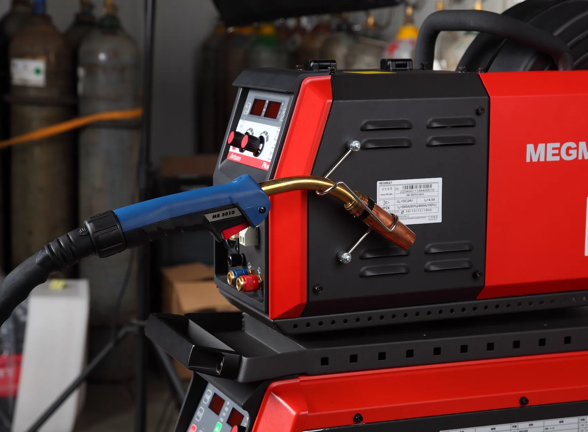
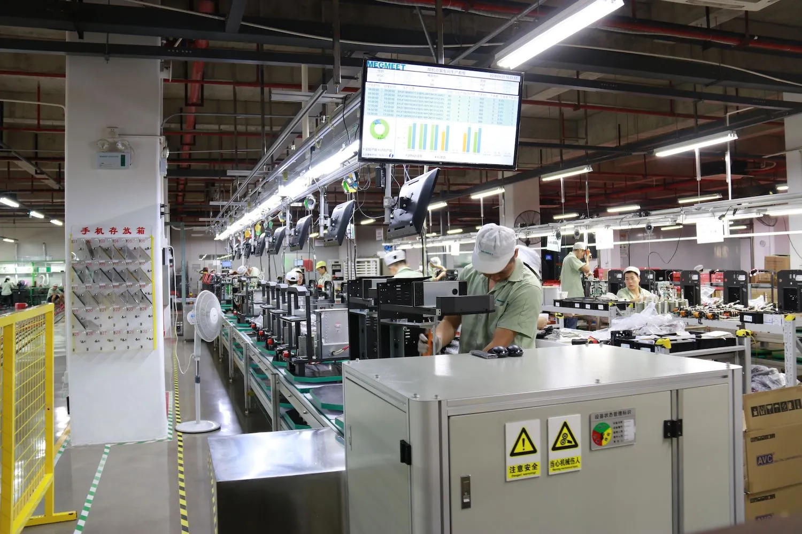

<section class="about-lab">
    <div class="container">
        <div class="about-lab__top">
            <div class="about-lab__subtitle txt20">лаборатория</div>
            <div class="about-lab__title tl1">собственная испытательная лаборатория</div>
        </div>
        <div class="about-lab__container">
            <div class="about-lab__left">
                <div class="about-lab__quality">
                    
                    <span>проверенное качество</span>
                </div>
                <div class="about-lab__text txt20">
                    <p>Всё вышеперечисленное воздействуется на полуавтоматы в совокупности. В ходе испытаний постепенно усиливаются внешние воздействия до поломки аппарата с целью выявления слабых мест. Затем производятся необходимые изменения в аппарате и тест проводится снова.</p>
                </div>
            </div>
            <div class="about-lab__right">
                <div class="about-lab__text  txt20">
                    <p>Благодаря собственной испытательной лаборатории полуавтоматы MEGMEET проверены экстремальными условиями. Испытывается устойчивость к таким внешним факторам как:</p>
                    <ul>
                        <li>электрические разряды до 6000В/3000А (соответствие классу защиты D)</li>
                        <li>вибрации</li>
                        <li>высокая влажность и температура</li>
                        <li>соляные спреи, металлическая пыль</li>
                    </ul>
                </div>
                <div class="about-lab__img">
                    
                </div>
            </div>
        </div>
    </div>
</section>